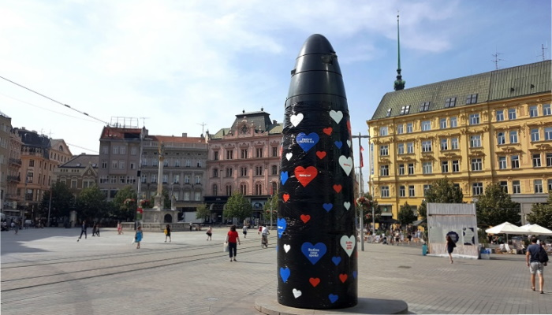

Líbeznice vyhlašují nezávislost
Svobnodný lid Republiky Líbeznice prochází městem s nově navrženou národní vlajkou
Situace je zmatená, nikoliv však vypjatá. Pan starosta svolil poskytout našemu občasníku exkluzivní rozhovor a vnést tak na povrch první informace o prítomnosti a blízké budoucnosti nově vzniklé Republiky Líbeznice.
Líbeznice budují celonárodní pivovod
Pivovod procházející v zeleném pásu okolo Líbeznic, v pozadí hora Říp
V květnu by konečně měla započíst dlouho očekávaná stavba městského pivovodu, tedy potrubní komunikace plošně distribující zlatavý mok po celé naší metropoli.
Líbeznice mění Prahu za Brno

Přes veškerou snahu vědců z celého světa se zatím nepodařilo zjistit, kolik je v Brně vlastně hodin
Poté co Praha rozvázala kvůli politické rozepři partnerství s Pekingem, začala pomalu pokukovat po patnerské metropoli, která by toto volené místo zacelila.
Všechny postavy na této stránce jsou smyšlené, jakákoliv podobnost se skutečností je pouze náhodná.